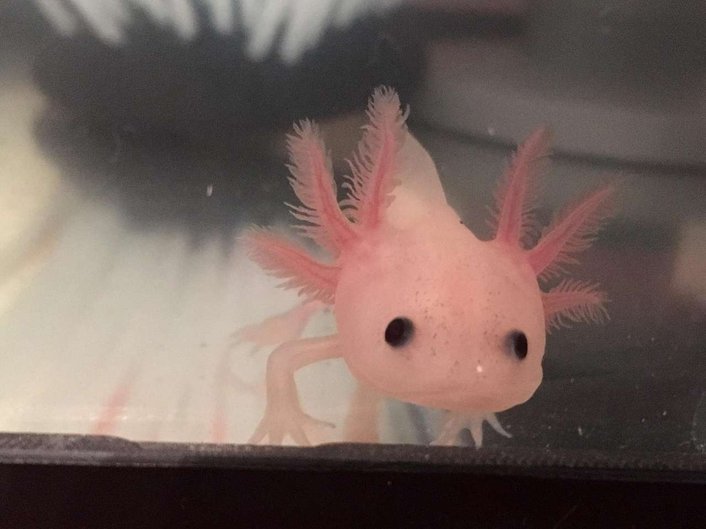
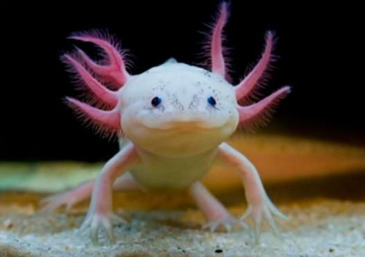
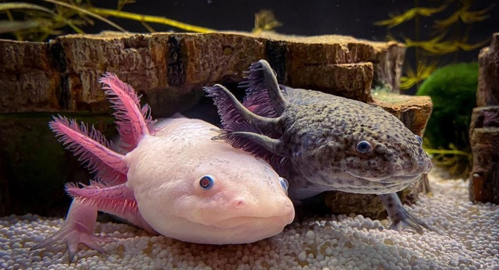

Es una especie de anfibio caudado ambistomátido del género Ambystoma relacionado con la salamandra tigre.Fue descrito originalmente por George Kearsley Shaw y Frederick Polydore Nodder. Es endémico del sistema lacustre de la Cuenca de México y ha tenido una gran influencia en la cultura mexicana. Se encuentra en peligro crítico de extinción por la pérdida de hábitat, introducción de peces exóticos, sobreexplotación, contaminación y su consumo como alimento. Es una especie neoténica, es decir, puede alcanzar la madurez sexual reteniendo sus características larvarias, no completando el proceso de metamorfosis al contrario que la mayoría de anfibios.
| Jovenes | Adultos | Otros |
|---|---|---|
|  |  |  |